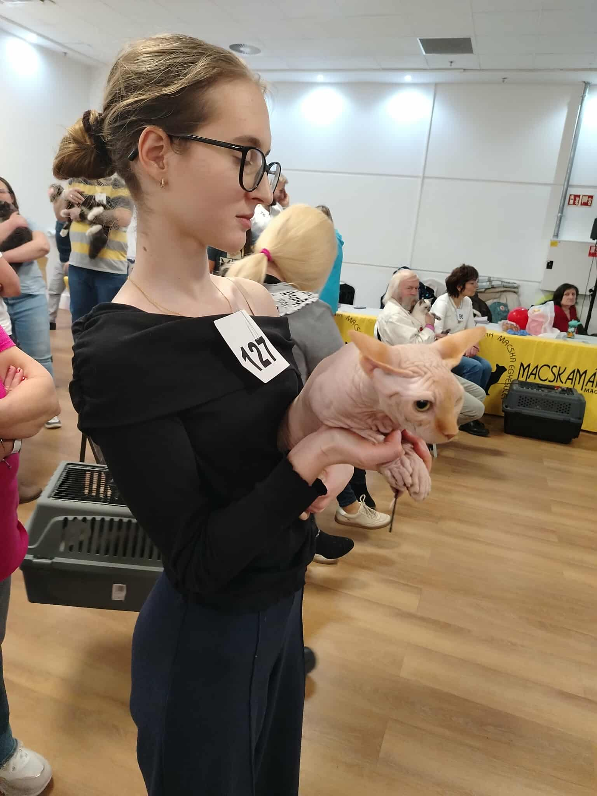

Üdvözöljük a Little Goblins Kenel oldalán!

2025 októberében indítottuk el
tenyészetünket azzal a céllal, hogy egészséges, kiegyensúlyozott és
szeretetteljes kanadai szfinx cicákat neveljünk. A fajta különleges
megjelenése mellett elsősorban rendkívüli személyisége ragadott
magával bennünket. A szfinxek intelligensek, kíváncsiak, játékosak,
és rendkívül szoros kapcsolatot alakítanak ki gazdájukkal. Igazi
családtagok, akik állandóan keresik az ember közelségét és
szeretetét.
Tenyészetünk alapját két csodálatos tenyészmacskánk
alkotja: fiú cicánk, Osiris, valamint lány cicánk, Lara. Mindketten
kiváló természetű, egészséges és gyönyörű egyedek, akik tökéletesen
képviselik a fajta legjobb tulajdonságait.
Számunkra a tenyésztés
nem csupán hobbi, hanem felelősségteljes elkötelezettség. Cicáink
családi környezetben, szeretetben és folyamatos odafigyelés mellett
nevelkednek, így már életük első heteitől hozzászoknak az emberi
kapcsolatokhoz és a mindennapi élet zajaihoz. Célunk, hogy minden
kiscicánk magabiztosan, kiegyensúlyozottan és egészségesen kerüljön
új otthonába.
Nagy hangsúlyt fektetünk tenyészállataink egészségére
és jólétére. Fontos számunkra, hogy a leendő gazdik olyan cicát
kapjanak, aki nemcsak gyönyörű, hanem egészséges és megfelelő
szocializációval rendelkezik. Hiszünk abban, hogy minden kiscica
különleges, ezért szeretettel és gondoskodással kísérjük őket életük
első heteiben. Öröm számunkra, amikor megtalálják azt a családot,
ahol hosszú, boldog és szeretetteljes élet vár rájuk.
Köszönjük,
hogy ellátogatott oldalunkra, és megismerkedik tenyészetünkkel!